

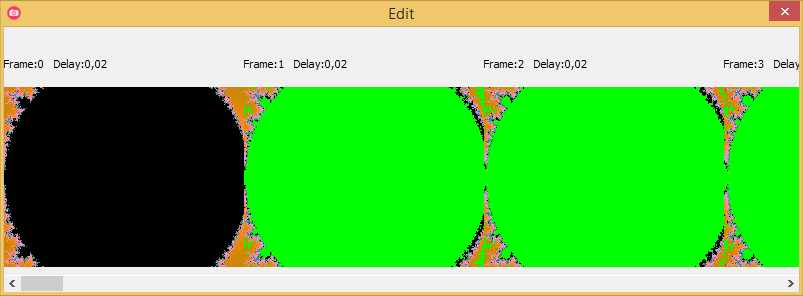
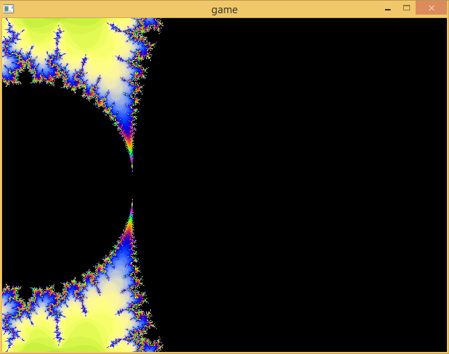

gifcap - A library for easy, fast, creation of GIF files

This is a small C language animated GIF writer library.
It is available at this bitbucket repository, which includes a demo.
It is based on
Jon Olick's excellent GIF writer code
(archive).
I have improved upon it by including the following features:
- Multithreading - encode and write GIFs to disk while the next frame is rendered
- Faster encoding due to optimised algorithms
- Smaller filesizes
The "gif" in gifcap is pronounced as
ɡ
ɪ
f
,
GHIF.
As a caveat, I have also left the code in a very poor, hacky state, and couldn't be arsed to clean it.
The account below I believe is an interesting exploration of some computer science problems.
History
In december 2018 while working on collision code for my 3D FPS engine I decided to add GIF output as a debugging aid.
The GIFs it would generate were of enormous file size, and it would leave the application running very slowly even for relatively small, low FPS gifs.
Improving filesize
Improving filesize was simply a matter of adding support for what one can call delta encoding, or which some GIF software calls "greenscreen", that is,
to only store the pixels changed from one frame to the next. The image below, from
GifCam's GIF editor
(archive)
shows in green unchanged areas from one frame to the next, which need not be stored, saving disk space.

JO's lib lacked support for such frames, likely due to simplicity concerns (he boasts the 398 lines of code).
The code changes to achieve this were quite simple:
#define NO_GREENSCREEN (gif->numColors == 256 || gif->frame == 0 || genPalette)
unsigned char *indexedPixels = gif->buf[0], *oldPixels = gif->buf[1];
if(NO_GREENSCREEN && oldPixels) memset(oldPixels, 0, size);
for(i = 0; i < size * !NO_GREENSCREEN; i++){
if(indexedPixels[i] == oldPixels[i]) indexedPixels[i] = 0;
else oldPixels[i] = indexedPixels[i];
}
#define BLOCK_START NO_GREENSCREEN ? "\x21\xf9\x04\x00" : "\x21\xf9\x04\x05"
fwrite(BLOCK_START, 4, 1, gif->fp);
//if using all colours, on the first frame, or new palette, can't delta-frame
#define NO_GREENSCREEN (gif->numColors == 256 || gif->frame == 0 || genPalette)
unsigned char *indexedPixels = gif->buf[0], *oldPixels = gif->buf[1];
if(NO_GREENSCREEN && oldPixels) memset(oldPixels, 0, size);
// Write new GIF frame to indexedPixels
// [...]
//calc delta-frame
for(i = 0; i < size * !NO_GREENSCREEN; i++){
if(indexedPixels[i] == oldPixels[i]) indexedPixels[i] = 0;
else oldPixels[i] = indexedPixels[i];
}
// Graphic Control Extension
//last byte here tells whether to use a transparent colour and delta frame
#define BLOCK_START NO_GREENSCREEN ? "\x21\xf9\x04\x00" : "\x21\xf9\x04\x05"
fwrite(BLOCK_START, 4, 1, gif->fp);
And the benefits in file size were drastic. Note it is not necessary to perform run length encoding or other such methods on the pixels
that are marked as unchanged: the LZW compression algorithm takes care of that.
Optimising encoding
GIF encoding, specially at "higher resolutions" such as a mind-breaking 320x240, was going quite slow, single digit frame-per-second values.
Some very basic profiling showed that the big hotspot in GIF encoding was the "quantization" step, that is, the code to turn a 24-bit R8G8B8 colour value
into an 8-bit palette index. In JO's original library this hotspot is a straightforward linear search:
int rgb[3] = { ditheredPixels[k+0], ditheredPixels[k+1], ditheredPixels[k+2] };
for(i = 0; i < gif->numColors && bestd; ++i){
int bb = palette[i*3+0]-rgb[0];
int gg = palette[i*3+1]-rgb[1];
int rr = palette[i*3+2]-rgb[2];
int d = bb*bb + gg*gg + rr*rr;
if(d < bestd) {
bestd = d;
best = i;
}
}
//naive search
int rgb[3] = { ditheredPixels[k+0], ditheredPixels[k+1], ditheredPixels[k+2] };
for(i = 0; i < gif->numColors && bestd; ++i){
int bb = palette[i*3+0]-rgb[0];
int gg = palette[i*3+1]-rgb[1];
int rr = palette[i*3+2]-rgb[2];
int d = bb*bb + gg*gg + rr*rr;
if(d < bestd) {
bestd = d;
best = i;
}
}
The computer-science savvy friend will reframe this problem, every colour is a point in 3D space, the quantization step is a nearest-neighbour search,
and the palette needs to be turned into some sort of tree data structure. The answer is a kd-tree. To quote Wikipedia:
In computer science, a k-d tree (short for k-dimensional tree) is a space-partitioning data structure for organizing points in a
k-dimensional space. k-d trees are a useful data structure for several applications, such as searches involving a multidimensional
search key (e.g. range searches and nearest neighbor searches). k-d trees are a special case of binary space partitioning trees.
The code for a kd-tree implementation I based on
Rosetta Code's example implementation
(archive),
shamelessly. The quantization is now done in two steps:
struct kd_node_t *palkdn = gif->palkdn;
struct kd_node_t *palkdt = gif->palkdt, kdcol;
const struct kd_node_t *kdbest;
if(gif->frame == 0 || genPalette){
for(i = (gif->numColors != 256); i < gif->numColors + (gif->numColors != 256); i++){
palkdn[i].x[0] = palette[i*3+0];
palkdn[i].x[1] = palette[i*3+1];
palkdn[i].x[2] = palette[i*3+2];
palkdn[i].idx = i;
}
palkdt = gif->palkdt = kdtree_make_tree(palkdn + (gif->numColors != 256), gif->numColors, 0);
}
kdcol.x[0] = ditheredPixels[k+0];
kdcol.x[1] = ditheredPixels[k+1];
kdcol.x[2] = ditheredPixels[k+2];
kdtree_nearest(palkdt, &kdcol, 0, &kdbest, &bestd);
best = kdbest->idx;
//Build kdtree from palette
struct kd_node_t *palkdn = gif->palkdn;
struct kd_node_t *palkdt = gif->palkdt, kdcol;
const struct kd_node_t *kdbest;
if(gif->frame == 0 || genPalette){
for(i = (gif->numColors != 256); i < gif->numColors + (gif->numColors != 256); i++){
palkdn[i].x[0] = palette[i*3+0];
palkdn[i].x[1] = palette[i*3+1];
palkdn[i].x[2] = palette[i*3+2];
palkdn[i].idx = i;
}
palkdt = gif->palkdt = kdtree_make_tree(palkdn + (gif->numColors != 256), gif->numColors, 0);
}
// [...]
//Find best fit colour with kd-tree
kdcol.x[0] = ditheredPixels[k+0];
kdcol.x[1] = ditheredPixels[k+1];
kdcol.x[2] = ditheredPixels[k+2];
kdtree_nearest(palkdt, &kdcol, 0, &kdbest, &bestd);
best = kdbest->idx;
The performance benefits were drastic.
Multithreading
Still, each frame necessarily takes a decent amount of time to encode. And disk I/O, which can block, was another factor
The library could already do over 12 FPS for decent resolutions, but I intended this for a realtime application, such as the game engine.
Those have to run at 60 FPS, but they also have to run smoothly - a frame can't take much longer than the other. And in the naive way to call the
encoder, blocking the renderer for GIF output at every 5th frame, the performance was thus degraded.
I thus applied the PTHREADS library to straightforwardly allow encoding a frame while the main application continued to run:
static void *gif_func(void *arg)
{
do{
pthread_mutex_lock(&gc->thr_lock);
while(!gc->thr_has_frame){
pthread_cond_wait(&gc->thr_cond, &gc->thr_lock);
}
jo_gif_frame(&gc->jo, c, (gc->delta + gc->delta_error) / 100, gc->gen_pal);
gc->thr_has_frame = 0;
pthread_mutex_unlock(&gc->thr_lock);
} while(1);
return 0;
}
int gifcap_start(gifcap_t *cap, const char *filename, gifcap_param_t params)
{
cap->thr_has_frame = 0;
cap->thr_cond = PTHREAD_COND_INITIALIZER;
cap->thr_lock = PTHREAD_MUTEX_INITIALIZER;
cap->thr_arg.gc = cap;
if(pthread_create(&cap->thr, 0, gif_func, &cap->thr_arg)){
return 1;
}
return 0;
}
void gifcap_frame(gifcap_t *cap, unsigned char *buf)
{
pthread_mutex_lock(&cap->thr_lock);
memcpy(cap->thr_arg.frame_data, buf, cap->jo.width * cap->jo.height * 4);
cap->thr_has_frame = 1;
pthread_cond_signal(&cap->thr_cond);
pthread_mutex_unlock(&cap->thr_lock);
}
void gifcap_end(gifcap_t *cap)
{
pthread_mutex_lock(&cap->thr_lock);
pthread_cancel(cap->thr);
}
static void *gif_func(void *arg)
{
// [...]
do{
pthread_mutex_lock(&gc->thr_lock);
//Wait for a frame to encode
while(!gc->thr_has_frame){
pthread_cond_wait(&gc->thr_cond, &gc->thr_lock);
}
// [...]
// Encode frame
jo_gif_frame(&gc->jo, c, (gc->delta + gc->delta_error) / 100, gc->gen_pal);
// [...]
gc->thr_has_frame = 0;
pthread_mutex_unlock(&gc->thr_lock);
} while(1);
return 0;
}
int gifcap_start(gifcap_t *cap, const char *filename, gifcap_param_t params)
{
// [...]
cap->thr_has_frame = 0;
cap->thr_cond = PTHREAD_COND_INITIALIZER;
cap->thr_lock = PTHREAD_MUTEX_INITIALIZER;
cap->thr_arg.gc = cap;
if(pthread_create(&cap->thr, 0, gif_func, &cap->thr_arg)){
// [...]
return 1;
}
// [...]
return 0;
}
void gifcap_frame(gifcap_t *cap, unsigned char *buf)
{
pthread_mutex_lock(&cap->thr_lock);
//Copy frame data to another buffer
memcpy(cap->thr_arg.frame_data, buf, cap->jo.width * cap->jo.height * 4);
//Signal that we have a frame to encode
cap->thr_has_frame = 1;
pthread_cond_signal(&cap->thr_cond);
pthread_mutex_unlock(&cap->thr_lock);
}
void gifcap_end(gifcap_t *cap)
{
pthread_mutex_lock(&cap->thr_lock);
pthread_cancel(cap->thr);
// [...]
}
Of course the main application will still block if the GIF encoder cannot keep up - but the speed of the main application is thus decoupled
from the speed of the GIF encoder.
Mandelbrot demo
I was thinking of what to use as a GIF encoding demo. I originaly thought of using some implementation of
famous PSX Doom fire effect as explained by Fabien Sanglard
(archive),
but as Jon Olick's original page on his library has an animation based on a Julia set I opted to do one based on the similar Mandelbrot set instead.

The code is again "borrowed" from
Rosetta Code
(archive).
It uses Allegro 4, as most of my graphical applications.
The nice colouring algorithm is from this StackExchange post.
Post scriptum
Many thanks for Jon Olick for the original library, without which this wouldn't exist.
Thanks for Rosetta Code, as a convenient code repository.
If you use this, specially if you improve upon it, please give me a shout at Twitter or the IRC.